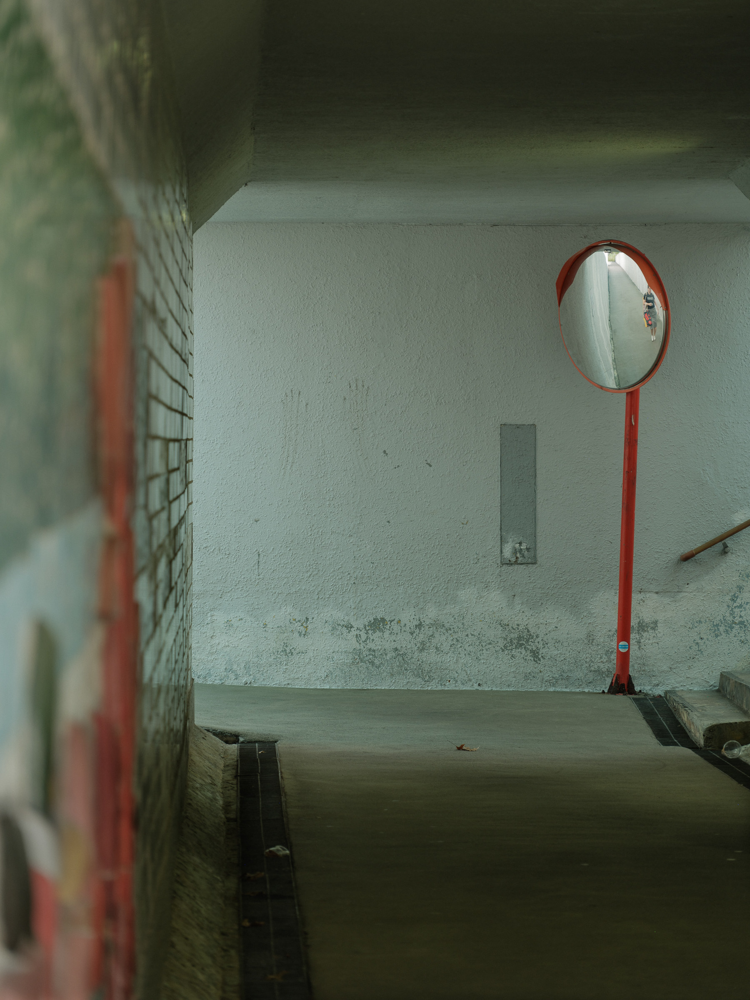
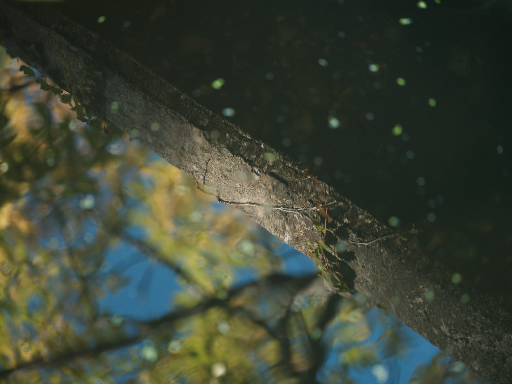

Presence
2026
보는 찰나, 사물은 마음의 대상이 되어 정신현상으로 존재하다 사라진다. 어느 한편의 기억으로 남겨진 채.
지금 마주한 존재는 눈앞에 놓인 사물이 아니라, 마음 어느 한편에 고인 기쁨과 슬픔, 이야기와 추억이 그려낸 수채화로 - 희미한 윤곽, 여백, 침묵으로 가만히 드러난다.
In the fleeting moment of seeing, the object becomes a subject of the mind, existing briefly as a mental phenomenon before vanishing — left behind as a quiet fragment of memory.
What stands before us now is not the physical object, but a watercolor painted by the joy and sorrow, stories and recollections settled in a corner of the mind — quietly revealing itself through faint contours, empty space, and silence.

